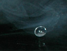

Droplets of Liquid Nitrogen on Table Top
|

| Droplets on liquid nitrogen on a table top will zip around like tiny hovercraft, suspended on a cushion of nitrogen gas from the rapidly evaporating droplet. The droplets of liquid may also oscillate and rotate rapidly. If placed on a dusty surface, they will pick up dust and carry it with them. |
A good way to form large droplets with interesting motions is to dip a long strip of foam packing material into the liquid nitrogen. It will take up a considerable amount of the liquid, which can then be transferred to the table top in large droplets.
|
Index
Temperature concepts
Liquid nitrogen |